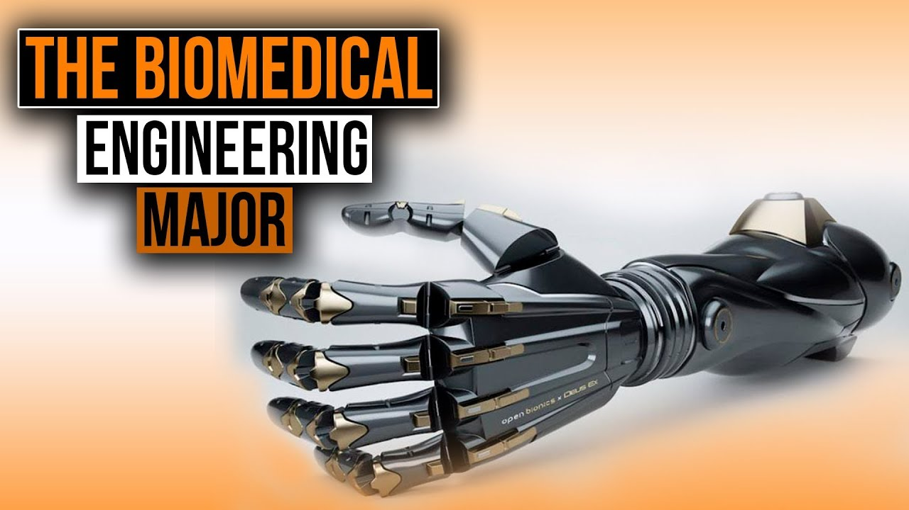

박민준
17078812D
- Electrical Engineering
- Mechanincal Engineering
- Biomedical Engineering
- circuit
- power system
- turbin
Biomedical Engineering
Biomedical engineering (BME) or medical engineering is the application of engineering principles and design concepts to medicine and biology for healthcare purposes (e.g. diagnostic or therapeutic). This field seeks to close the gap between engineering and medicine, combining the design and problem solving skills of engineering with medical biological sciences to advance health care treatment, including diagnosis, monitoring, and therapy.[1][2] Also included under the scope of a biomedical engineer is the management of current medical equipment within hospitals while adhering to relevant industry standards. This involves equipment recommendations, procurement, routine testing and preventative maintenance, through to decommissioning and disposal. This role is also known as a Biomedical Equipment Technician (BMET) or clinical engineering.
